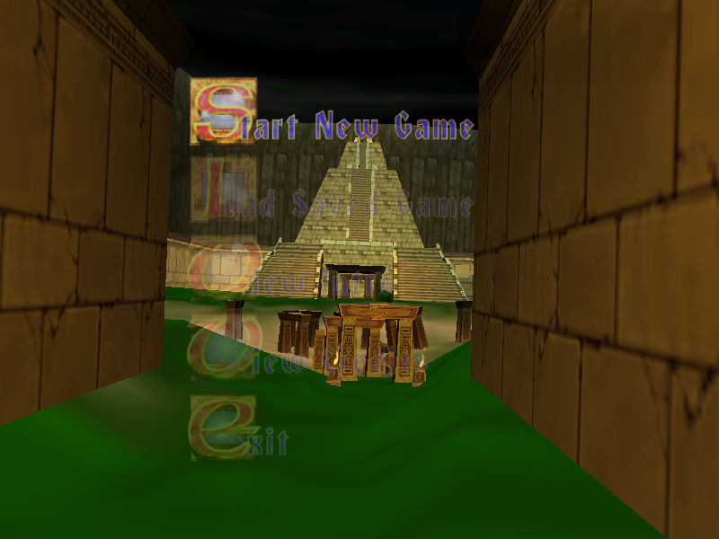
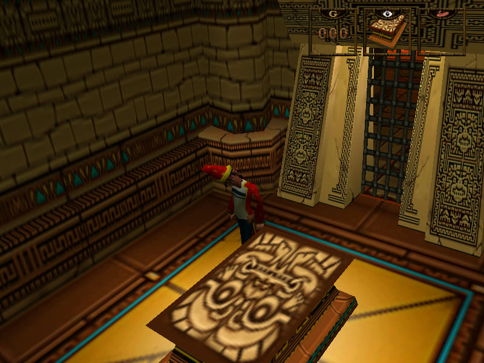

名稱：魔法師西蒙3D／頑皮法師3D (Simon the Sorcerer 3D／Simon 3D，英文版) 簡介：Headfirst 2002年出品的冒險解謎遊戲，由Adventure代理發行 [待補]。   保護：光碟，破解碼： Simon3D.exe 84 C0 0F 85 8A 00 00 00 -- -- 90 E9 -- -- -- -- 備註：遊戲亦可以"Simon3D.exe -snafu"方式啟動。

